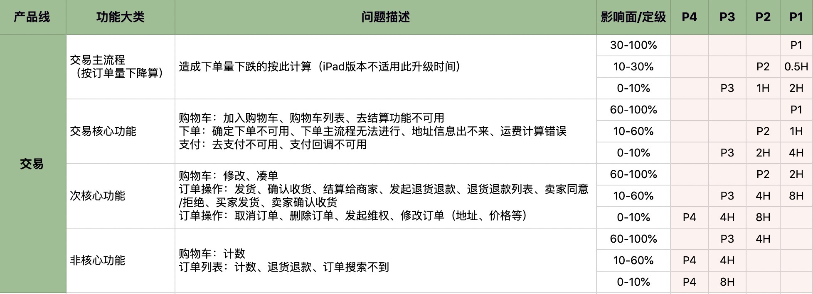
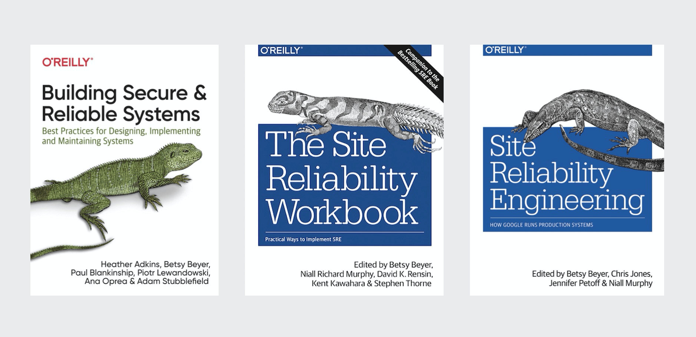

- 00 开篇词 SRE是解决系统稳定性问题的灵丹妙药吗？.md.html
- 01 SRE迷思：无所不能的角色？还是运维的升级？.md.html
- 02 系统可用性：没有故障，系统就一定是稳定的吗？.md.html
- 03 SRE切入点：选择SLI，设定SLO.md.html
- 04 错误预算：达成稳定性目标的共识机制.md.html
- 05 案例：落地SLO时还需要考虑哪些因素？.md.html
- 06 故障发现：如何建设On-Call机制？.md.html
- 07 故障处理：一切以恢复业务为最高优先级.md.html
- 08 故障复盘：黄金三问与判定三原则.md.html
- 09 案例：互联网典型的SRE组织架构是怎样的？.md.html
- 10 经验：都有哪些高效的SRE组织协作机制？.md.html
- 答疑 没什么能阻挡你拓展边界的渴望.md.html
- 结束语 聊聊我的SRE落地心路历程.md.html
- 捐赠
答疑 没什么能阻挡你拓展边界的渴望
你好，我是赵成。
最近一直关注你的留言，我发现大家有一些共性的问题，所以专门准备了这次答疑加餐，和你分享我的一些想法，还有我看到的特别有洞见的留言，我们一起继续交流。今天我总共梳理了六个问题，前五个和SRE的落地及概念有关，最后一个关于个人成长，那我们就开始吧。
- 小团队，实践SRE可以从哪些方面入手？中小型公司资源有限，怎么做才能让系统全方位地稳定起来呢？
如果确实资源有限，我的建议是跟业务开发坐到一起，就不要独立去做一些事情了，这时还是以满足业务开发的需求为主。如果时间精力充足，可以先从一些重复繁琐工作的自动化入手，先提升效率再说。
再就是，团队规模小的时候，其实恰恰是提升技能全面性的机会，因为这时分工没有这么细，从网络、服务器、操作系统，再到Web服务器、应用服务器、数据库、缓存等等，都是学习和接触的好机会。
随着业务的增长，未来团队变大，就可以考虑SRE体系化了，建议先做一些分布式、微服务和高可用架构方面的知识储备，未来随着实践的深入，视野自然会逐步打开。
- 如何定义一个故障？有什么具体方法吗？粒度怎么界定？
定义一个故障，我觉得有两种方式。
一种是我们SRE课程第04讲中错误预算的计算方式。这种方式是从技术维度来定义，通常会用在一些技术产品中，比如云计算行业里的CDN、云存储，或者是一些提供开放API调用的服务，这种产品根据调用的返回码、响应时延以及错误码等等就可以评估系统稳定性，具体方式我在课程里有详细讲到，你可以再复习一下。这里的关键还是找到能够衡量稳定性的指标，并设定稳定性指标的SLI和SLO，进而推导出错误预算。如果一开始不好衡量，就先从当前的实际情况出发，比如成功率的SLO是98%，那就看怎么提升到99%，再到99.9%，逐步提升。
还有一种是我在《赵成的运维体系管理课》第 28 讲中讲到的，如果我们负责的是一个业务系统，比如电商类的，这时就要从业务维度进行分析，比如影响到的交易额、订单数、访问用户数等等。我给你放一张图，你可以参考下。

- SRE是否需要从项目开始就参与系统架构设计？如果只是在项目上线运行后才接触，遇到架构不合理的地方如何处理？
SRE是不是要在项目开始的时候就参与到系统架构设计中，答案是肯定的。即使不是在项目开始时介入，也要在做技术方案和架构设计阶段就要参与进来，这个时候不一定参与架构本身的设计，但是要给架构提出明确的稳定性要求，比如哪些是核心部件？它们的稳定性要求应该是怎么样的，也就是SLO要达到多少？承诺的容量水平是多少？如果要做到高可用，是需要集群模式，还是主备模式？故障时的应急切换机制应该怎么设定？等等。这些要求决定了高可用的架构应该怎么设计。
如果是上线后才接触，还是先从SLO入手，建立SLO的稳定性衡量标准，然后看哪里不达标，就推进解决。SRE更多的要成为稳定性的监督者和推进者，而不是各种问题的救火队员。
- 国内传统行业的SRE组织架构是什么样的，有必要设置SRE岗位吗？
国内传统行业的SRE组织架构基本也是我在09讲中提到的组织架构。其实最开始我也很好奇传统行业会不会特别不一样，后来走访了一些企业后，我发现其实是殊途同归的，因为不论是传统行业还是互联网行业，大家选择了相似的架构演进方向，就需要有配套的组织架构，无论是实线的组织架构，还是虚线的协作模式，形式上大致相似。
至于是否有必要设置SRE岗位，我觉得真的不能把SRE只当成一个岗位来看，它实际传递的是一种稳定性的理念。遵循这种理念去做，这个岗位是不是叫SRE其实都已经不重要了，比如在阿里和蘑菇街，甚至是国外的Facebook，都叫做PE，在这些公司里PE在职责上跟SRE是一样的。
讲到这里呢，就多说一下PE（Production Engineer）这个角色，翻译成中文是生产系统工程师，最早是由雅虎定义出来的一个岗位，注意，这个岗位不是运维。这个角色的职责其实是由软件架构师承担的，也就是架构师负责设计架构，参与核心功能研发，对于产品了解得也最全面，所以系统上线后，维护的工作自然由他来承担，同时，随着线上问题的解决和处理，以及对线上问题的反思和总结，他又会不断完善架构设计和改造，是一个不断正循环的过程。
所以，你看，PE这个角色从一开始就是有非常高的要求的，并不是普通角色能承担的。阿里也是在收购了雅虎中国后，将PE的角色和先进机制引入到了阿里的技术体系中，国外很多公司也沿用了PE这样的角色，可以说从根本上，PE跟SRE的要求和作用是一样的。
- DevOps和SRE有什么区别？
这个问题，是我在第01讲中留的作业题，我发现很多同学的回答已经非常深入了，我分享两位同学的理解。
来自于加硕同学：
DevOps核心是做全栈交付，SRE的核心是稳定性保障，关注业务所有活动，两者的共性是都使用软件工程解决问题。
DevOps的诞生是由于互联网商业市场竞争加剧，企业为减少试错成本，往往仅推出最小可行产品，产品需要不断且高频地迭代来满足市场需求，抢占市场（产品的迭代是关乎一整条交付链的事），高频的迭代则会促使研发团队使用敏捷模式，敏捷模式下对运维的全栈交付能力要求更严格，运维必须开启DevOps来实现全栈交付。因为不断的迭代交付（也就是俗称的变更）是触发故障、非稳定性的根源，而对于互联网产品来说，服务稳定性缺失会造成用户流失，甚至流到竞争对手那里， 因此关注业务稳定性也变得十分重要，SRE由此诞生。
来自无聊的上帝：
DevOps主要是以驱动价值交付为主，搭建企业内部的功效平台。SRE主要需要协调多团队合作来提高稳定性。- 例如：- 与开发和业务团队落实降级；- 与开发和测试团队推动混沌工程落地；- 与开发团队定制可用性衡量标准；- 与开发、测试、DevOps、产品团队，共同解决代码质量和需求之间的平衡问题。
我为什么觉得这两位同学的留言有见地呢？因为他们都找到了看待这个问题的全新的角度，不是单纯地比较这两者应该采用什么技术，做什么事情，而是聚焦到我们要解决什么问题上。DevOps的出发点是“更加高效地交付用户价值”，而SRE的出发点是“保障和提升系统稳定性”，两者要做的事情其实本质上差别不大，但是角度不同，那么在执行的时候，要解决的问题也就会有所差异。
- 在工作职责和经验有限的情况下，怎么不断提升自己，拓展自己的能力边界？怎么提高英语水平？怎么提升编码能力？
我觉得对于我们技术人来说，最好的提升自己的方式就是实践，解决实际问题，然后思考总结，比如输出总结文章等等。解决的问题越多，能力自然会提升，边界和视野自然会打开。
关于提高英语水平，我觉得也是一样，就是多听多看多说。
这一部分，我不打算分享太多细节，为什么呢？因为我觉得关于学习和成长，是需要我们每个人沉下心来从一点一滴做起的，比如从读第一篇英文文章和论文开始，不懂的单词一个一个查清楚，一句话看不懂，耐心多读几遍，今天读不懂，明天后天再回头来读，再体会。
学习真的就是这样一点一滴积累，耐住性子，一开始可能积累得会比较慢，但是慢慢地就会越来越快。
所以，最终的建议就是，从现在开始，先做起来再说吧。
讲到这里，我就给你推荐一下系统学习SRE的资料吧，我认为到目前为止，最体系化的学习资料就是Google官方发布的3本书，全英文版，要学习英语就从他们开始学起吧。

关于这三本书的阅读循序，建议你先读兼具普适性和参考性的第二本，然后再看第一本，最后读第三本。
好了，今天的答疑就到这里了。学习的过程中，如果你还有什么疑惑或者心得体会，欢迎继续写在留言区，和大家一起交流。
© 2019 - 2023 Liangliang Lee. Powered by gin and hexo-theme-book.